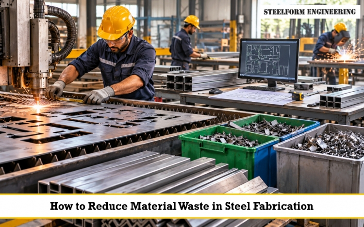

Steel scraps might contribute to additional expenses and reduced productivity rates. Small offcuts also accumulate over time. The positive thing about all this is that more efficient planning might help to reduce the waste.
During steel fabrication, every piece of metal is very important. Correct measurements, cutting plan and material utilisation will have a positive impact on the process.
This blog will provide tips for reducing steel waste during production. We will analyse such aspects as cutting plans, material nesting, offcut usage and production planning.
The right planning plays an essential role in reducing the amount of steel waste. At this stage, it is necessary to assess the size and quantity of parts. A proper cutting plan makes workers use every steel piece correctly. Besides, this method will lower the risk of cutting the wrong size.
Steel cutting optimisation allows organising the cutting process efficiently. The purpose of this process is to utilise the metal pieces correctly and get more parts. Review the list of steel pieces to be cut before the process.
Nesting of materials refers to the arrangement of parts to ensure they occupy minimal space. Material nesting is helpful in ensuring optimum utilisation of the steel sheets. Effective nesting minimises gaps between the parts, thus reducing the amount of scrap produced.
In case of complex tasks, the nesting of material may necessitate the use of specially designed software which considers part sizes and restrictions of the cutting process. Optimised utilisation of materials implies maximum utilisation of steel purchased to produce useful parts.
Measurement mistakes can result in wasting some part of the steel because it may be cut smaller than required or longer than required. Always take exact measurements before cutting. Ensure to have accurate plans of the project. It is always necessary to check measuring instruments from time to time.
Not all the offcuts of steel have to be disposed of. Some offcuts can be used for other parts or projects. Store any reusable offcuts in an organised place. They should be classified according to their size, type and class.
When purchasing the materials, consider what is already on hand. It could help minimise unnecessary purchasing of additional stocks and offcuts.
Remember, however, that the steel should be reused only if it matches the project requirements. Under no circumstances use materials which do not pass necessary tests for dimensions and quality.
Inadequate planning often results in hasty work and waste of materials. Late changes during the production process may also generate offcuts. Check all the drawings, amounts, and delivery times before production starts. Make sure that your team has all the latest information about the project.
Combine similar cutting jobs, when it is reasonable to do so. It could help workers make better use of the materials. Proper planning ensures effective steel fabrication. It could also save time and materials.
Being well organised will help employees easily select the correct steel stock. In addition, it will allow you to have a better overview of the available materials.
Steel should be stored based on its size, grade and type. All markings should be legible and clear. Check the quantity of stock often in order to avoid overordering. Use old stock whenever possible.
If the tools get worn out, it might give rise to poor cutting and waste of material. Poor adjustment is another problem that could arise. Regularly check your tools and equipment. Be sure to service your unit according to the manufacturer’s recommendations.
Always select the proper settings for the type of steel being used. Make test cuts as needed before beginning the production process. Good maintenance of equipment will improve cut quality a lot. It can also avoid losses.
There will be no improvement in wastage levels if it is not measured. You have to begin measuring the amounts of steel used and wasted.
This should be reviewed after the completion of each project or production run and the issues of incorrect cuts and additional waste should be documented.
Discuss with the employees to see why there is wastage and if there are simple things that could be done to cut down wastage levels.
Waste reduction requires efficient planning and execution. The proper measurement, best cutting methods, and usage of the leftovers are very important here.
Steel manufacturing and cutting can be effective in helping to use material effectively. This will enable us to save extra costs and make the procedure easier.
We at Steelform Engineering know the importance of proper steelwork. We help in proper planning and efficient processes to achieve this goal.
Need to find a reliable partner for your steel fabrication? Contact us at Steelform Engineering and get professional advice on your steel fabrication and cutting needs.